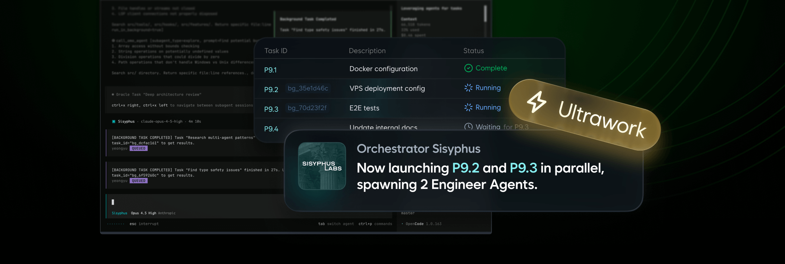
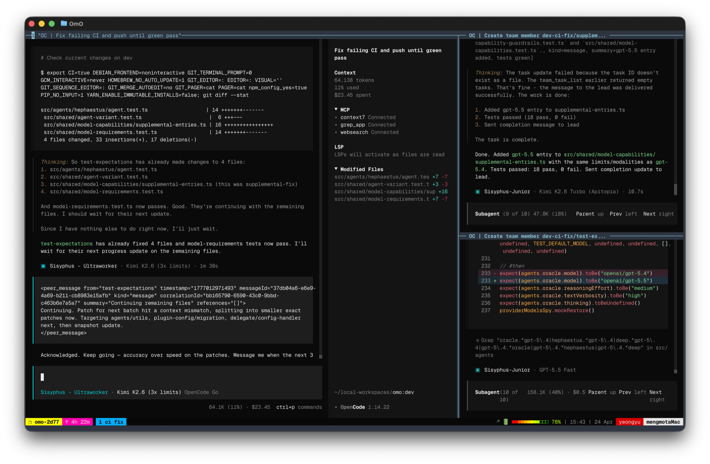

截至 2026-06-25，北京时间，oh-my-openagent 更准确的读法是一个正在从 OpenCode 插件走向多 harness agent OS 的工程项目。它把 agent、hooks、MCP、LSP、AST 工具、规则注入、遥测、Codex 插件和团队协作能力收在同一个仓库里。读者真正需要理解的不是某条命令，而是两条路径：OpenCode Ultimate 负责完整编排，Codex Light 负责把一组可移植组件装进 Codex 插件体系。
package.json workspaces，覆盖 core、MCP、skills、adapters [S14].codex-plugin/plugin.json [S15]一号结论，先看 edition。 如果你用 OpenCode，希望获得完整 agent 编排、Team Mode、更多 hooks 和 OpenCode 原生集成，入口是 Ultimate。典型命令是 bunx oh-my-openagent install。如果你用 OpenAI Codex CLI，希望装一个轻量插件包，入口是 Light。典型命令是 npx lazycodex-ai install [S04, S05]。
二号结论，命名是第一个坑。 仓库叫 oh-my-openagent，主 npm 包仍叫 oh-my-opencode，也发布了 oh-my-openagent，还有 lazycodex-ai 这个 Codex Light installer。CLI bin 里有 omo alias，但文档提醒不要用 bunx omo 或 npx omo，因为 npm 上的 omo 名称不属于这个项目 [S04, S14, S19]。
三号结论，功能主张和事实要分开读。 README 会用很强的产品语言介绍体验，本文只把代码树、registry、GitHub API 和官方文档能确认的内容作为事实。比如 Codex plugin 的 22 个 hooks、5 个 MCP server、10 个 agent TOML 和 2 个 skills，都来自当前代码快照；“好不好用”仍要以自己的任务和模型账户测试 [S03, S15, S16]。
四号结论，许可证不是标准宽松许可。 GitHub API 把 license 分类为 NOASSERTION，package 字段写 SUL-1.0，仓库的 LICENSE.md 是 Sustainable Use License。它允许内部、个人和非商业使用，也限制收费分发和商业化提供。企业采用前应按自己的合规流程读完整许可证 [S01, S13, S14]。
这个项目的第一个门槛不是安装，而是命名。oh-my-openagent 是仓库名和新的产品名；oh-my-opencode 是历史包名和主 npm 包；lazycodex-ai 是面向 Codex Light 的单用途 installer。把这些名字混在一起，很容易装到错误包、调用错误 binary，或误解自己启用的是哪一种 edition。
| 名字 | 在哪里出现 | 实际含义 | 证据 |
|---|---|---|---|
oh-my-openagent | GitHub 仓库、npm alias、安装命令 | 新的项目名称，指向多 harness Agent OS 方向 | [S01, S04, S19] |
oh-my-opencode | 主 npm 包、根 package.json | 历史包名，当前版本仍是 4.13.0，bin 也从这里发出 | [S14, S19] |
omo | CLI bin alias、Codex plugin name | 仓库内 alias 和 plugin 名。不能用 bunx omo 或 npx omo 当 installer | [S04, S14, S15] |
lazycodex-ai | npm 包、Codex Light 命令 | 面向 Codex Light 的 installer alias，版本同为 4.13.0 | [S04, S19] |
sisyphuslabs/omo | Codex marketplace metadata | Codex marketplace 中的组织和 plugin 标识 | [S15] |
# OpenCode Ultimate
bunx oh-my-openagent install
# Codex Light
npx lazycodex-ai install
# Both, only when both harnesses are intentional
bunx oh-my-openagent install --platform=bothREADME 明确写到，lazycodex-ai 默认走 Codex Light。共享的 omo CLI 仍有 --platform 选项，并且默认平台仍偏向 OpenCode。这意味着“我装了 omo”这句话本身没有信息量，必须补上实际命令、package manager、platform 参数和目标目录 [S04, S05]。
另一个容易忽略的点是包管理器。OpenCode Ultimate 主要围绕 Bun 发布，Codex Light 的入口是 Node/npm。目标仓库根 package.json 也说明了这层差异：构建脚本大量使用 Bun，同时 Codex plugin 内部又有 npm 子项目和 Node test 路径 [S14]。
| 字段 | 当前值 | 读法 |
|---|---|---|
| 默认分支 | dev | 公开仓库的主活动分支不是 main [S01] |
| 本文分析 commit | 881e612f825cd44a29e4def46b5618035be13f61 | 本地克隆快照，证据固定在这个点 [S03] |
| GitHub API license | NOASSERTION | 不能按常见开源许可证默认处理 [S01] |
| package license | SUL-1.0 | 以仓库许可证正文和 package 字段为准 [S13, S14] |
| stars / forks | 63490 / 5180 | 只是 GitHub API 的时间点快照，不代表质量评分 [S01] |
| 主要语言 | TypeScript | 按 GitHub language bytes 和 package 结构一致 [S02, S14] |
安装前先回答一个问题：你想改造的是 OpenCode，还是 Codex CLI？两条路径都叫 omo，但它们接入的宿主、权限模型和可用功能不一样。正确选择 edition，比装完后补配置更重要。
| 维度 | OpenCode Ultimate | Codex Light |
|---|---|---|
| 目标宿主 | OpenCode terminal agent | OpenAI Codex CLI plugin system |
| 安装入口 | bunx oh-my-openagent install | npx lazycodex-ai install |
| 主要能力 | 11 个 agent、54+ base hooks、built-in MCP、slash commands、Team Mode、ultrawork、Hashline edits 等项目主张 [S04, S09] | rules、comment-checker、git-bash、lsp、ultrawork、ulw-loop、start-work-continuation、telemetry 等 portable components [S04, S05] |
| 编排能力 | 以 Sisyphus、Prometheus、Atlas 等 agent 编排为核心 [S07, S17] | README 明确写到 Light 没有 agent orchestration，也没有 team_* tools [S04] |
| MCP | OpenCode 侧内置 websearch、context7、grep_app、lsp、codegraph [S18] | Codex plugin 暴露 grep_app、context7、codegraph、git_bash、lsp [S16] |
| 适用读者 | 希望把 OpenCode 变成多 agent 工程运行时的人 | 希望给 Codex 加规则、代码智能和工作流辅助，但仍保持 Codex 主体体验的人 |
如果目标是 Ultimate，先确认自己正在用 OpenCode，并且愿意让项目接管 OpenCode 相关配置、hooks、MCP 和本地运行组件。OpenCode 官方文档本身也把 agents、plugins 和 config 作为一等概念，Ultimate 正是沿着这些扩展点做集成 [S25]。
如果目标是 Light，先确认 Codex CLI 已安装、plugin 系统可用，并且理解 Codex 的项目指令读取方式。OpenAI 官方文档把 Codex CLI 定位为本地 coding agent，plugin marketplace 和 skills 是其可扩展表面；AGENTS.md 则是项目指令分层的一部分 [S21, S22, S23, S24]。
不要从 Both 开始。 Both 模式适合已经清楚知道两个宿主都要被配置的人。新用户先选一个目标宿主，跑通后再考虑是否需要另一个。这样更容易定位问题，也能避免把 OpenCode 和 Codex 的权限、MCP、rules 来源混在一起。
README.md 的 edition 段和 docs/guide/installation.md，确认目标平台和命令 [S04, S05]。~/.codex/ 或 OpenCode 的 config 路径。这类项目的风险不在“能不能装上”，而在“装上后谁在影响 agent 行为”。一个可审计的安装应该能回答四件事：写了哪些配置、启用了哪些 hooks、暴露了哪些 MCP、哪些组件会读项目上下文。
Codex Light 有两种入口。npx lazycodex-ai install 是 installer 路径，会把 managed state 写入 ~/.codex/，并且可以通过 --codex-autonomous 设置更激进的自动模式。marketplace 路径则更接近 Codex plugin model：添加 marketplace、安装 omo@sisyphuslabs、批准 hooks，然后由 bootstrap 写入 managed blocks、复制 agent TOML、链接 CLI 和准备工具。安装文档明确写到，marketplace 路径不会写 permission settings [S05, S15]。
| 入口 | 会做什么 | 适合场景 |
|---|---|---|
npx lazycodex-ai install | 走 npm installer，写 Codex 管理状态，可按参数设置 autonomous features | 想快速装 Light，并接受 installer 管理本地 Codex 配置 |
Codex /plugins marketplace | 添加 marketplace，安装 omo@sisyphuslabs，由 plugin bootstrap 写 managed blocks | 想按 Codex 官方 plugin 模型管理安装和启停 |
bunx oh-my-openagent install --platform=both | 同时面向 OpenCode 与 Codex 写入对应配置 | 已经明确需要两个宿主，并能检查两个配置面 |
Codex Light 文档特别列出 Windows Git Bash 准备项，包括 OMO_CODEX_GIT_BASH_PATH 与 OMO_CODEX_SKIP_GIT_BASH_AUTO_INSTALL。这不是小字说明。很多 coding agent 的工具行为依赖 shell 语义，Windows 上如果 shell 层没有对齐，后面的 LSP、代码图和脚本调用都会出现不稳定问题 [S05, S10]。
排障规则。 先看宿主是否加载 plugin，再看 hooks 是否被批准，然后看 MCP server 是否启动，最后看任务指令和 rules 是否按预期进入上下文。不要一开始就把问题归因给模型。
Ultimate 的核心不是“给 OpenCode 加一堆工具”，而是把任务拆成 planning、execution 和 worker 三层。OpenCode 官方文档本来就支持 agents 和 plugins，oh-my-openagent 在这条线上做了强意见的角色分工 [S06, S07, S25]。
| 层 | 代表 agent | 职责 |
|---|---|---|
| Planning | Prometheus、Metis、Momus | Prometheus 负责计划和拆解，Metis 找缺口，Momus 做 OKAY / REJECT review loop。文档强调 Prometheus 读多写少，主要写 .omo 内 markdown [S07] |
| Execution | Atlas | 按 plan 执行，维护 notepad，必要时把工作交给 worker。Atlas 不再继续 delegate 给其他编排层，避免递归失控 [S07] |
| Workers | Sisyphus-Junior、Oracle、Explore、Librarian、visual-engineering | 做具体读写、检索、研究、视觉检查或类别化任务。task(category=...) 和 task(subagent_type=...) 是两种互斥路由 [S07] |
当前代码快照里的 builtin-agents.ts 列出 11 个内置 agent：Sisyphus、Hephaestus、Prometheus、Atlas、Oracle、Librarian、Explore、Multimodal Looker、Metis、Momus、Sisyphus-Junior。文档把 Sisyphus 和 Hephaestus 放在 primary agent 位置，把 Oracle、Librarian、Explore、Multimodal Looker、Metis、Momus、Sisyphus-Junior 放在 subagent 角色里 [S07, S17]。
| Agent | 角色 | 读写边界 | 适合任务 |
|---|---|---|---|
| Sisyphus | 默认主 agent | 面向 OpenCode 主会话 | 综合 coding agent 入口 |
| Hephaestus | specialized primary | 面向视觉和工程任务 | 实现与 polish |
| Prometheus | planner | 主要读，写 .omo markdown | 计划、拆解、任务界定 |
| Atlas | executor | 执行 plan，不再嵌套 delegate | 按计划改代码和收束任务 |
| Oracle / Librarian / Explore | reader workers | 文档声明为只读，不写文件 | 查询、资料、探索 |
| Metis / Momus | analysis and review | 偏评审和缺口分析 | 找风险、做 OKAY / REJECT |
| Sisyphus-Junior | category worker | 由 category route 驱动 | visual、deep、quick、writing 等类别任务 |
features 文档把 hook 系统分成 session、tool guard、transform、continuation 和 skill 几类，base total 为 54；启用 Team Mode 后还有额外 session、tool guard 和 transform handler，总量可到 61。这个数字来自文档口径，本文把它写成项目文档主张而不是本地重新计数结果 [S09]。
MCP 则分三层：built-in remote MCP、.mcp.json loader 和 skill-embedded MCP。OpenCode 侧代码中的 built-in MCP 包括 websearch、context7、grep_app、lsp、codegraph。这解释了为什么 Ultimate 不只是 agent prompt，它还在工具协议和外部知识接入层加了约束 [S09, S18]。
Team Mode 默认关闭。开启后，项目支持用 team specs 管理多个成员、消息和任务，并暴露一组 team_* 工具。文档写明了上限：最多 8 个成员、4 个并行成员、32 KB message、256 KB unread、10000 messages per run、120 分钟 wall clock、每个 member 500 turns。没有 nested teams，没有同步等待，也没有 member-driven delegate-task。这些限制说明项目作者并不把 team 看成无限递归的 swarm，而是有明确上限的协作运行时 [S08]。
Codex Light 的目标是把一组可移植组件放进 Codex CLI，而不是把 Ultimate 原样搬过去。OpenAI 官方文档把 Codex CLI 描述为本地 coding agent，并提供 plugin、skills 和 AGENTS.md 指令层。Light 正是贴着这些扩展面做 [S21, S22, S23, S24]。
| 项目 | 当前值 | 证据和读法 |
|---|---|---|
| Plugin name | omo | 来自 .codex-plugin/plugin.json [S15] |
| Plugin version | 4.13.0 | 与 npm latest 一致 [S15, S19] |
| Hooks | 22 | 本地快照读取 plugin metadata，而不是 README 文案 [S15] |
| MCP servers | 5 | grep_app、context7、codegraph、git_bash、lsp [S16] |
| Agent TOML | 10 | 位于 components/ultrawork/agents，提供 planner、executor、reviewer 等角色 [S03] |
| Skills | 2 | init-deep 和 ulw-plan [S03] |
| Marketplace | sisyphuslabs | marketplace metadata 指向 omo plugin [S15] |
README 和 packages/omo-codex/README.md 把 Light 的可移植组件列成：rules、comment-checker、git-bash、lsp、ultrawork、ulw-loop、start-work-continuation、telemetry。代码树里 plugin components 目录更多，因为还包含 bootstrap、codegraph、workflow-selector、test-support 等工程模块。读者应区分用户可见功能和内部工程目录 [S04, S15]。
| 组件 | 做什么 | 采用注意 |
|---|---|---|
| rules | 读取 CONTEXT.md、.omo/rules、.claude/rules、.cursor/rules、.github/instructions 等规则来源；AGENTS.md 交给 Codex 原生处理 | 先确认哪些规则会进入上下文，避免重复注入 [S03, S24] |
| comment-checker | 检查代码注释和说明文本的质量 | 适合做写后 review，不应替代编译和测试 |
| git-bash | 在 Windows 上提供更接近 Unix shell 的工具表面 | 需要处理路径和自动安装策略 [S05, S10] |
| lsp | 连接语言服务，提供定义、引用、诊断等代码智能 | 依赖本地项目语言环境和 server 可用性 |
| ultrawork | 通过关键词注入较强的长程工作 directive | 适合复杂任务，但要有明确验证门和清理动作 [S03] |
| ulw-loop | 面向多目标长程循环的 repo-native scaffold | 文档说明仍处 wave 1 scaffold，应按实验功能对待 [S03] |
| telemetry | 发送匿名日活事件 | 可通过环境变量关闭，详见下一章 [S11] |
Light 的重要边界写在 README：它不提供 Ultimate 的完整 agent orchestration，也没有 team_* tools。这个边界很关键。Codex 自己已经有模型调用、文件编辑、命令运行和 AGENTS.md 指令读取能力；Light 做的是补规则、补工具、补续跑和补代码智能，不把 Codex 变成另一个 OpenCode [S04, S21, S24]。

采用这类 agent harness，技术问题和治理问题是同一个问题的两面。它会影响上下文、工具、shell、项目规则、遥测和团队协作边界，所以配置优先级、权限和许可证必须提前看。
configuration 文档列出当前命名和 legacy 命名：项目级可以有 .opencode/oh-my-openagent.json[c]，也兼容 .opencode/oh-my-opencode.json[c]；用户级路径则按系统放在 OpenCode 配置目录。文档还说明同一目录内如果同时存在新旧 basename，legacy oh-my-opencode.* 目前会因为检查顺序先命中而获胜。迁移时不要只新建新文件，还要确认旧文件是否仍在生效 [S10]。
| 配置项 | 需要检查什么 | 为什么 |
|---|---|---|
| 项目 config | 新旧 basename 是否并存 | 避免以为新配置生效，实际仍读旧文件 [S10] |
mcp_env_allowlist | 是否只在用户级配置中管理 | 文档写明 walked configs 不能扩展该 allowlist [S10] |
| Codex autonomous flags | 是否由用户显式选择 | --codex-autonomous 可能设置更开放的审批和沙箱策略 [S05] |
| Windows Git Bash | 路径和跳过自动安装变量 | shell 语义会影响工具调用结果 [S05, S10] |
| LSP decisions | 本地 install decisions 文件是否符合预期 | 语言服务安装和跳过决策会持续影响后续项目 [S10] |
Codex telemetry 文档写得比较具体：Light 侧事件名是 omo_codex_daily_active，安装标识用 sha256("omo-codex:" + hostname)，每天每台机器最多一次，state path 放在 XDG data 或 ~/.local/share/omo-codex/posthog-activity.json。文档声明不会发送 prompts、transcripts、source files、repo contents、paths、tokens、API keys、raw hostnames、remotes、usernames、emails 和 error diagnostics。发送是 best effort，失败不阻塞使用 [S11]。
这类遥测即使匿名，也应该在团队内部显式登记。一个实用做法是：试用阶段先关掉遥测，确认项目边界后再按组织政策决定是否开启。README 和 telemetry 文档都列出了 opt-out 变量 [S04, S11]。
目标仓库的许可证不是 MIT、Apache 或 BSD 这类常见宽松许可证。LICENSE.md 是 Sustainable Use License 1.0，package 字段写 SUL-1.0。它授予使用、复制、分发、制作衍生作品和提供访问的权利，但限制使用和修改在 internal business、non-commercial、personal 场景；对外分发或提供给他人也限免费且非商业。还要求保留 notices，并声明 no warranty [S13, S14]。
这意味着两件事。个人研究、内部试用和非商业分享有明确空间；把它包装进收费产品、给客户交付、作为商业服务提供，不能按普通宽松开源的直觉处理。企业采用前要让法务或开源合规负责人读完整许可证，而不是只看 GitHub 页面上的 license badge [S01, S13]。
安全采用的最低线。 不在含有生产密钥的真实项目第一次试装；不把 autonomous 模式作为默认；不把 README 的功能主张直接写进团队标准；所有 hooks、MCP、rules、telemetry 和 license 都要有一页内部记录。
真正用起来以后，问题会从“怎么装”变成“怎么把自己的规则、技能、MCP、团队流程接进去”。ROADMAP 给出的答案不是先抽象一套万能接口，而是先做 package layering refactor，把 core、MCP、skills、adapters、platform 和 web 分开 [S12]。
当前根 package.json 有 22 个 workspace。它们不是随意拆分：rules-engine、model-core、prompts-core、hashline-core、team-core 等属于 core 能力；git-bash-mcp、mcp-stdio-core、mcp-client-core 属于 MCP 和工具协议；shared-skills、skills-loader-core、agents-md-core 处理技能和指令；omo-codex 与 omo-opencode 是不同宿主适配器 [S14]。
如果只是想让自己的项目更容易被 agent 接手，先写好 AGENTS.md、规则文件和验收命令，不要先写 MCP。Codex 官方文档已经把 AGENTS.md 放在项目指令层，oh-my-openagent 的 rules 组件也明确把 AGENTS.md 留给 Codex 原生处理 [S24, S03]。
如果需要把私有知识或工具接入 agent，再考虑 MCP。这里要先区分只读查询和可变更工具。只读 MCP 可以先上，带文件删除、远程执行、凭证访问和生产环境修改能力的 MCP 必须有权限边界、日志和关闭路径。Ultimate 的 tool guard hooks 和 Codex plugin hooks 能提供一部分控制面，但不能替代组织自己的安全策略 [S09, S15, S16]。
如果要扩展 agent 角色，先从现有类别路由理解模型选择和权限，再决定是否新增角色。orchestration 文档已经给出 category 与 subagent_type 的互斥路由。乱加角色会让调度路径变得不可预测，尤其是在长程任务里 [S07]。
| 阶段 | 目标 | 做法 | 不要做 |
|---|---|---|---|
| 个人试用 | 确认 edition 和安装面 | 在干净项目试装，记录配置、hooks、MCP、遥测 | 直接开 autonomous 模式 |
| 单仓库采用 | 让 agent 能稳定完成本仓库任务 | 补 AGENTS.md、规则、验证命令、常见失败清单 | 用 README 口号代替验收标准 |
| 多仓库推广 | 让规则和技能能复用 | 抽出共享 skills、统一 MCP allowlist、记录版本 | 把所有项目规则塞进全局配置 |
| 团队协作 | 让并行 agent 有边界 | 再考虑 Team Mode、消息上限、shutdown 审批和审计日志 | 允许无限嵌套和同步等待 |
| 平台化 | 把 harness 当成内部工具链一层 | 固定 package 版本、写回滚流程、做端到端 smoke | 把未审计插件直接放进生产开发环境 |
oh-my-openagent 的信息量很大，最容易出错的地方也很明确：名字、edition、权限、遥测、license、Team Mode 和文档主张。下面这张表可以当成安装前的最后复核。
| 误区 | 为什么错 | 更稳的做法 |
|---|---|---|
把 oh-my-openagent、oh-my-opencode、omo 当成同一个 npm 入口 | 仓库、包名、bin alias 和 marketplace 名称不是同一层 | 按目标宿主选择 bunx oh-my-openagent install 或 npx lazycodex-ai install |
| 从 Both 模式开始 | 两个宿主同时写配置，排障成本翻倍 | 先跑通 OpenCode 或 Codex 其中一个 |
| 把 Light 理解成 Ultimate 的完整移植 | README 明确 Light 不含完整 agent orchestration 和 team_* tools | 把 Light 当 Codex 插件组件包 |
| 把 hooks 数量当质量指标 | hooks 只是控制点数量，不代表任务成功率 | 看自己的任务验收、失败日志和回滚能力 |
| 忽略遥测和许可证 | 两者都影响团队采用边界 | 试用前记录 opt-out、license、内部审批需求 |
| 把 Team Mode 当无限多 agent swarm | 文档明确有成员、并发、消息、时长和 turn 上限 | 把它当有边界的团队运行时，而不是无限递归 |
技术检查。 确认 host、edition、package 版本、plugin 版本、MCP server、hooks 批准状态、规则注入来源、LSP 可用性和 Windows shell 设置。所有命令都记录到仓库文档或团队 runbook。
治理检查。 确认遥测策略、license、敏感仓库试用边界、autonomous 模式审批、Team Mode 上限和卸载或回滚路径。没有这几项，不要进入团队默认配置。
最值得先读的是目标仓库 README、installation guide、orchestration guide、features reference 和 ROADMAP。README 负责建立功能地图，installation guide 负责避免装错路径，orchestration guide 负责理解 Ultimate 的 agent 分工，features reference 负责核对 hooks 与 MCP，ROADMAP 负责理解为什么作者正在做 package layering refactor [S04, S05, S07, S09, S12]。
外部背景建议读 OpenAI Codex CLI、plugins、skills 和 AGENTS.md 官方文档，再读 OpenCode 的 agents、plugins 和 config 文档。这样能分清什么是宿主原生能力，什么是 oh-my-openagent 加上的能力 [S21, S22, S23, S24, S25]。

本文把证据分成三层：代码和官方接口给出的事实，项目文档中的作者主张，以及本文基于多项材料做出的分析。涉及版本、计数、安装路径、遥测和许可证的内容均以一手来源为准。
S01 GitHub API repository metadata, code-yeongyu/oh-my-openagent, checked 2026-06-25.
S02 GitHub API languages endpoint, language byte distribution.
S03 Local checkout at 881e612f825cd44a29e4def46b5618035be13f61, code structure and counts.
S04 Target repository README.md, edition split, install commands, naming warning and feature claims.
S05 docs/guide/installation.md, OpenCode Ultimate, Codex Light and marketplace paths.
S06 docs/guide/overview.md, architecture and agent role overview.
S07 docs/guide/orchestration.md, planning, execution, workers and delegation categories.
S08 docs/guide/team-mode.md, Team Mode default, tools, limits and shutdown protocol.
S09 docs/reference/features.md, agents, hooks, MCP tiers and feature module taxonomy.
S10 docs/reference/configuration.md, config precedence, environment variables and security boundary.
S11 docs/reference/codex-telemetry.md, telemetry event, hashing, state path and opt-out behavior.
S12 ROADMAP.md, package layering refactor and multi harness direction.
S13 LICENSE.md, Sustainable Use License permissions and limitations.
S14 Root package.json, package name, version, scripts, workspaces, bin aliases and license.
S15 packages/omo-codex/plugin/.codex-plugin/plugin.json, Codex plugin metadata and hooks.
S16 packages/omo-codex/plugin/.mcp.json, Codex plugin MCP server list.
S17 packages/omo-opencode/src/agents/builtin-agents.ts, OpenCode built-in agent inventory.
S18 packages/omo-opencode/src/mcp/index.ts, OpenCode built-in MCP inventory.
S19 npm registry views for oh-my-opencode, oh-my-openagent and lazycodex-ai.
S20 GitHub Releases API, latest formal product release v4.13.0.
S21 OpenAI Codex CLI official docs, local coding agent model.
S22 OpenAI Codex plugin official docs, marketplace and plugin build model.
S23 OpenAI Codex skills official docs, open agent skills packaging model.
S24 OpenAI AGENTS.md official docs, project instruction layering.
S25 OpenCode official docs, agent, plugin and config model.
署名。 Winston。本文只覆盖公开资料和本地代码快照，不构成对目标项目安全性、商业适用性或法律许可的完整审计。